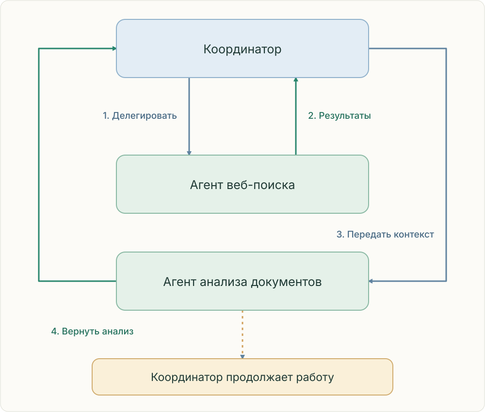

Передавайте данные явно.
Вызов агента не означает доступ к чужой переписке. Передавайте релевантные результаты или доступные ссылки на артефакты вместе с задачей.

Координатор поручает поиск, получает результаты, передаёт их агенту анализа документов, получает анализ и продолжает работу.
Вопрос №10 · разбор: C
Синтез не получил исследование после завершения поиска и анализа. Координатор должен передать их результаты во вход синтеза или явно доступный артефакт. Общий API-коннект не создаёт общий контекст.
Полезный контракт
Передавайте цель, ограничения, результаты, связи утверждений с источниками, пробелы и формат ответа. Проверяйте доступ к артефактам. Резюме должно сохранять доказательства и неопределённость.
Проверьте себя
Какого входа не хватает? Кто отвечает за следующий шаг? Какие доказательства нужно сохранить? Объясните причину ошибки до выбора компонента.
Источники и границы
Anthropic · How we built our multi-agent research systemAnthropic · When to use multi-agent systems
В экспорте отсутствуют исходные вопросы №1–8. Главы раскрывают указанные темы без выдуманной привязки к номерам. №9–11 пересказаны по изображениям; выбранные ответы — аргументированный разбор, а не проверенный официальный ключ.
Редакционная проверка: 25 октября 2026. Актуальную программу экзамена проверяйте отдельно.